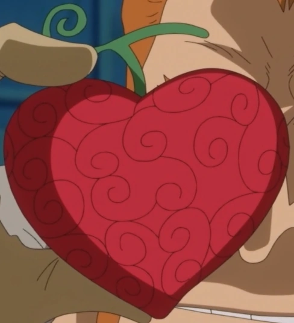
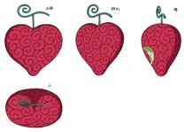
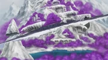
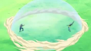
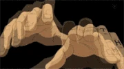
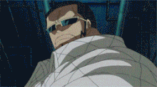
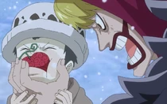

Опэ Опэ но Ми
Опэ Опэ но Ми — дьявольский плод типа Парамеция, который позволяет пользователю создавать сферическую зону, называемую «Room» («Комната»), где он имеет полный контроль над размещением и ориентацией объектов, что делает его Свободно переделывающим человеком (改造自在人間 Кайдзо: Дзидзай Нингэн?).Этот плод был съеден Трафальгаром Ло.
Впервые сила плода была показана на Архипелаге Сабаоди,но его название не прозвучало. Его мы узнали лишь в Арке Панк Хазард, в 661 главе манги.
Этот плод называют "Величайшим дьявольским плодом" (究極の悪魔の実 Кю:кёку но Акума но Ми?), благодаря его уникальной способности давать другому человеку вечную жизнь в обмен на жизнь самого пользователя.[5] Дозорные собирались заплатить BeliSymbol5 000 000 000 чтобы выкупить его у пирата по имени Диес Баррелс.Плод также известен и является желанным для многих и благодаря другой его способности, а именно проводить чудесные операции, лечить тяжёлые болезни без лекарств и даже исцелять физические недостатки.
 Этимология«Oпэ» происходит от слова "операция", поскольку пространство, которое создает пользователь, можно сравнить с операционной, а пользователя с хирургом.
Внешний вид Опэ Опэ но Ми имеет форму сердца и, в отличии от показанных ранее плодов, довольно маленького размера, его можно легко взять двумя пальцами. Сам он красного цвета, а внутри он жёлто-зелёный. Его стебель имеет форму закрученной сверху буквы «Т». На своей поверхности имеет закрученные узоры, характерные для природных дьявольских плодов.
Сила и слабости
Опэ Опэ но Ми имеет форму сердца и, в отличии от показанных ранее плодов, довольно маленького размера, его можно легко взять двумя пальцами. Сам он красного цвета, а внутри он жёлто-зелёный. Его стебель имеет форму закрученной сверху буквы «Т». На своей поверхности имеет закрученные узоры, характерОпэ Опэ но Ми предоставляет пользователю целый ряд способностей, в определённом радиусе действия, создавая вокруг сферическое пространство, которая обозначается светло-голубой аурой (которую Ло называет ROOM), что затем даёт ему возможность манипулировать чем угодно на этой территории, как например людьми, пушечными ядрами и кораблями, что описывается как «хирургия». Таким образом, находясь внутри ROOM, пользователь способен применять своего рода телекинез, а также обменивать предметы местами путём телепортации. Благодаря способностям этого плода, Ло может разрезать людей и других существ, не вредя им, поднимать, двигаться или перемещать объекты различного размера, а также менять "сердца" людей, меняя их сознания местами — Донкихот Дофламинго называет эту технику "Трансплантация человеческих личностей" (人格移植手術 Дзинкаку Исёку Сюдзюцу?).
Со времени первого показанного использования, Ло значительно развил свои способности за время таймскипа, в результате чего его ROOM стала покрывать гораздо большее пространство.Он также может моментально менять себя местами с любыми другими предметами внутри ROOM по своему желанию, показывая тем самым особую форму телепортации.Из-за его огромной власти над пространством, пользователь также может высвобождать энергию в виде высоковольтных ударов, а также создавать пространственные лезвия, которые могут проходить сквозь плоть врагов, разрушая их внутренние органы до тех пор, пока ROOM активна, а цель находится внутри неё.
Судя по всему, после смены душ людей, только сам пользователь может вернуть их обратно, однако их тела должны быть рядом с ним, чтобы он мог поменять их в изначальное состояние. Было показано, что Ло может использовать этот аспект своих сил дьявольского плода, изменяя тела людей так, чтобы заставить их вернуться к нему, поскольку только он и может вернуть их в первоначальное состояние. В случае перемещения "душ", силы дьявольского плода остаются в том теле, в котором они были первоначально, в то время как голос и другие способности, такие как хаки, остаются вместе с перемещёнными душами. Это было продемонстрировано когда Санджи использовал его Хаки Наблюдения, находясь в теле Нами, поскольку хаки зависит от духа человека.
Он также может прикреплять разделённые части так, как он считает нужным, например прикрепляя чью-то отрубленную голову к бочке. Люди, которые оказываются разделены этой способность не умирают и всё ещё могут чувствовать части тела, отделённые от них (также как и Багги который разделяется при помощи сил Бара Бара но Ми). Разделённые части могут быть собраны обратно в нормальное состояние. Однако, будучи разделёнными они могут быть собраны в изменённом виде или прикреплены к другим поверхностям, в том числе и к телам других людей.
Внутри ROOM, Ло может рассекать пространство, чтобы аккуратно разрезать плоть и кости, не причиняя вреда жертве. Однако, если он использует свои режущие силы против неживых объектов, эффект будет как от обычного разреза, что видно когда SAD вылетел из контейнера, когда Ло его разрезал.Этот эффект сохраняется даже после того, как Ло деактивирует ROOM. Внутренние органы, удалённые при помощи этой способности становятся уязвимыми и незащищёнными.
Судя по всему, жертвы со способностями дьявольских плодов по-прежнему сохраняют свои силы, после того как Ло разрубил их на части, но только те части, что обладают "сознанием" (как например голова) могут их использовать, находясь в разрубленном состоянии, поскольку такие части тела как сердце пользователей типа Логия не были способны использовать свою элементарную защиту, что было показано когда Моне умерла. Он также может менять местами людей внутри своего ROOM, что было показано когда он поменялся местами с Жаном Бартом и Бепо чтобы защитить последнего от Пасифисты в аниме, а также когда он поменялся местами с Дофламинго, чтобы тот не смог атаковать Санджи. Он также был способен использовать электрические атаки, подобные дефибриллятору.
Стоит отметить, что эффекты, созданные воздействием силы этого дьявольского плода не прекращаются, если пользователь потеряет сознание или на него будут надеты наручники из кайросэки поскольку сознания Нами и Санджи оставались поменянными и Ло, Смокер и Моне всё ещё были живы хотя их сердца и были извлечены из их тел когда пользователь находился без сознания. Также, было показано, что эту способность можно использовать в сочетании с хаки вооружения, что было показано, когда Ло удалось нанести урон, несмотря на защитные способности логии Смокера, при исполнении техники Mes.
Пользователи дьявольских плодов, которые были разделены при помощи этой способности всё равно чувствуют воздействие на них морской воды, если одна из их частей тела окажется под водой.[14] Следует отметить, что когда Ло создаёт свою ROOM, она остаётся неподвижной пока Ло не уберёт её или не создаст новую, что может указывать на то, что ROOM нельзя переместить после того, как она была создана.
Пространственные способности этого дьявольского плода также могут быть использованы для медицинских целей. Опэ Опэ но Ми описывали как плод, который обладает «чудесными» свойствами, обладая способностью вылечить любую болезнь, однако в то же время она требует немалых познаний в медицине, чтобы пользователь мог эффективно его использовать, поскольку плод лишь позволяет избегать некоторые биологические аспекты, но не игнорирует их полностью и его чудесные исцеления фактически сосредоточено на извлечении веществ, вызывающих болезнь, таких как вирусы и бактерии, непосредственно из тел пациентов. В таком случае, если бы врач, обладающими невероятными познаниями в медицине, получил этот дьявольский плод, его общие медицинские навыки были бы непревзойдёнными. Будучи высококвалифицированным и знающим хирургом и врачом, Ло может использовать свои способности в полной мере. Он продемонстрировал своё медицинское мастерство в обращении с этим плодом, излечив самого себя от Янтарной болезни будучи ребёнком и вновь, вылечив гигантских детей на Панк Хазард от их зависимости и нейтрализовать их смертельное отравление, вызванное наркотиками Цезаря, извлекая уже проглоченные ими наркотики непосредственно из их организмов.ные для природных дьявольских плодов.
Величайшей силой этого плода, благодаря которой он заслужил звание «Величайшего дьявольского плода», это способность даровать другому вечную молодость при помощи "Операции вечной молодости" (不老手術 Фуро: Сюдзюцу?), хотя выполнение этой операции требует от пользователя пожертвовать его собственной жизнью. Дофламинго искал этот плод, чтобы обманом заставить Ло провести эту операцию на нём, чтобы он после этого мог покорить мир и, возможно, править им вечно.
Согласно словам Дофламинго, Мировая Знать обладает каким-то национальным сокровищем и если использовать его вместе с силами Опэ Опэ но Ми, это позволило бы ему успешно покорить целый мир.
СлабостиОсновной слабостью этого плода является то, что пользователь Опэ Опэ но Ми может использовать большинство своих сил только внутри ограниченной области, таким образом, если цель выходит за её пределы, то оказывается вне досягаемости сил плода. Судя по всему, Ло должен делать специфические движения, чтобы использовать определённые атаки, хотя неизвестно необходимо ли это или он делает это лишь по собственному желанию. Более того, в то время как Ло может контролировать всё что угодно в определённом пространстве, если он потеряет концентрацию на оппоненте, они всё ещё будут способны спокойно двигаться, как показано когда Верго был способен вернуть себе сердце Ло, пока тот был отвлечён. Для того, чтобы Ло смог переместить объекты или людей внутри ROOM, судя по всему, должно быть что то с чем произойдёт обмен, хотя неизвестно, точно ли он нужен.
Смокер также намекнул, что неуязвимость логий может помочь обойти силы данного плода, поскольку во время его противостояния с Ло он использовал свои дымовые способности без особых помех.Однако, если одна из частей тела будет отсечена силой Ло, тогда эта часть теряет способности логии; это означает, что такие части тела могут быть повреждены, а их защита от логий может быть обойдена, что показано когда Цезарь убил Моне (пользователя логии) проткнув её сердце, которое было отделено от неё, без использования Хаки Вооружения или кайросэки.
К тому же, Смокер также намекнул, что более развитое владение Хаки может предоставить пользователю достаточную защиту против сил этого плода. Но несмотря на это, Ло смог рассечь Верго пополам даже после того, как вице-адмирал Дозора покрыл всё своё тело при помощи хаки вооружения, что подразумевает то, что силы Ло превзошли силы Верго. В подтверждение слов Смокера выступает и момент, когда Ло не смог пробить Дофламинго, использовавшего хаки вооружения, когда тот схватил его меч и остановил атаку Ло, несмотря на то, что они оба находились внутри ROOM.
Ещё одним значимым недостатком этого плода является то, что использование его сил поглощает выносливость пользователя. Чрезмерное использование и использование на пределе может привести к тому, что срок жизни пользователя сократится. Использование Операции Вечной Молодости, в частности, будет стоит жизни пользователя.
Что касается применения плода в области медицины, пользователю, чтобы эффективно их применять необходимо обладать немалыми знаниями в этой области. Также, как отметил Донкихот Росинант, чудесные операции, проводимые пользователем плода не являются божественными или какими-либо всемогущими и до сих пор следует всем правилам науки и логики медицины, хотя и несколько условно. Таким образом подразумевается, что "пациенты" рискуют умереть или случайно быть убитыми, если операцию проведет кто-либо, кто недостаточно умел в медицинском плане, но при этом обладает силами плода.
Помимо всего вышеперечисленного Опэ Опэ но Ми обладает всеми стандартными слабостями дьявольского плода..
Использование Предыдущий пользователь
В прошлом неизвестный доктор съел этот Дьявольский плод, после чего он спас многих людей от страшных болезней, выполняя удивительные операции и исцеляя людей такими способами, которые другие хирурги не были способны повторить. Трафальгар Д. Ватер ЛоЛо обычно использует способности своего дьявольского плода вместе со своим искусством фехтования, делая свой меч своего рода «скальпелем» до тех пор пока его силы активны. Смокер заявил что сферическая территория, которую создаёт Ло показывает, насколько далеко он может действовать. Обычно он использует деформирующие силы в собственных интересах как в бою, так и вне его, чтобы достать до вещей, до которых он в противном случае не может дотянуться.
Он также может использовать свои силы, чтобы помочь себе в медицинский операциях, например чтобы разрезать своих пациентов на куски и методично удалять опасные предметы и вещества из тел пациентов, а после соединять их воедино. Именно с этой способностью Ло сумел излечить самого себя от Янтарной болезни которая поражала его тело из за накопившегося в организме свинца и это было основной причиной, почему Коразон скормил ему именно этот плод.
В аниме, было показано, как он разрезает своё окружение на куски и использует осколки от них в качестве метательного оружия, применяя на них свои телекинетические силы.
Ло использовал свои силы, чтобы превратить людей на Панк Хазард, которые потеряли свои ноги из-за инцидента с газовым оружием массового поражения, в кентавров и сатиров заменив нижней части их тела нижними частями тел соответствующих животных.
Силы Опэ Опэ но Ми делают Ло хорошим бойцом для дальних дистанций, поскольку он практически полностью контролирует область, в которой действуют его силы. Однако, он также грозен и в ближнем бою, что доказал, победив Вице-адмирала Смокера и позже одолев Йети Кул Бразерс используя наступательные техники.
Этот плод также может быть использован чтобы дать другому человеку вечную молодость в обмен на жизнь пользователя, именно это Дофламинго изначально и планировал заставить сделать Ло, промыв ему мозги, после того как узнал, что тот съел этот плод. Однако, Ло заявил, что его не интересует эта конкретная способность, по крайней мере не для его врага.
Техники
ROOM (ROOMルーム Руму?): Эта техника предшествует всем остальным техникам Трафальгара, при которой Ло создаёт сферическое пространство вокруг себя, в котором он может манипулировать всем чем хочет, самыми различными способами; он не может исполнять свои другие техники за пределами это сферической области. Впервые она было использовано в сражении с Морскими дозорными во время побега с Аукциона Рабов. Он может задержать активацию своего ROOM создавая маленький круг вокруг своей руки, который он позже может расширить в саму ROOM. Размер сферы ROOM может варьироваться от нескольких метров до размера, окружающего целые здания или горы, хотя большие ROOM требуют гораздо больших усилий, чтобы их поддерживать. ROOM имеет прозрачный цвет, однако её границы видны в виде сине-голубой ауры, поэтому Ло может удерживать свою ROOM так, чтобы враги не подозревая о её присутствии, скрыв её границы от их взора.Несмотря на то, что ROOM остаётся на одном месте, в One Piece: Gigant Battle 2 и One Piece: Super Grand Battle X, она может быть «перенесена» поскольку Ло может создать ROOM вокруг себя, но не может разместить её ещё где-то; хотя иногда бывает, когда для того, чтобы использовать последующие техники ему самому нет необходимости находится в пределах ROOM. В зависимости от источника информации, ROOM может быть написана на английском со всеми заглавными буквами (ROOM) или на катакане.
Атаки в RoomAmputate (切断アンピュテート Ампютэто?, англ. буквально означает "разрыв"): Базовая атакующая техника Ло. Ло рассекает свою цель, по факту не раня их. Мечу Ло необязательно касаться своих целей, чтобы разрезать их на куски. У отдельных частей тела судя по всему есть связь, схожая с той, что есть у Багги когда они использует свои силы Бара Бара но Ми. В то время как Ло никогда не называет эту технику перед её использованием, он назвал её в время объяснения работы Radio Knife. Ло впервые продемонстрировал эту технику во время сражения с дозорными снаружи Аукциона Рабов на Архипелаге Сабаоди, во время комбинации с Shambles. Кандзи для этой техники буквально читается как setsudan (где разрыв одно из возможных значений), в то время как ампутация это удаление конечности тела с травмой. Radio Knife (ラジオナイフ Радзио Найфу?): Ло заряжает свой меч электричеством, а затем быстро разрезает своего противника на несколько частей, параллельно ударяя его электрическим током. Впервые атака была использована против Требола сразу после использования Shambles, чтобы поменяться местами с Дофламинго. Также, после этой атаки, разрезанный некоторое время не может вернуться в свое нормальное состояние, даже если владеет плодом типа парамеция. Атака названа в честь хирургического инструмента, предназначенного для рассечения биологических тканей во время выполнения хирургических операций. Shambles (シャンブルズ Сямбурудзу?): В пространстве, созданным с помощью Room, Ло может разделить на куски своим мечом все, что захочет и изменить их по своему желанию, в том числе и людей. Он также может переместить любой объект внутри пространства. Например, когда он поменял голову Дозорного на пушечное ядро. Это было впервые продемонстрировано против некоторые Морских дозорных во время побега из Аукциона Рабов. Примечательно, что он может подтянуть объекты к себе без необходимости замены с другим объектом. Он также может использовать эту технику для замены себя на другие объекты, чтобы уклоняться от атак или для быстрого передвижения. Jinkaku Ishoku Shujutsu (人格移植手術 Дзинкаку Исёку Сюдзюцу?, англ. буквально означает Хирургия Пересадки Личности): во время противостояния с Пиратами Соломенной Шляпы, Ло демонстрирует, что может использовать Shambles чтобы менять местами и не физические предметы, такие как души, тем самым меняя местами сознание людей (выглядит, как мультяшное сердце), но чтобы совершить эту технику, между меняющимися должна быть некая связь.. Хотя прежде чем он сможет сделать это, ему надо сделать в их направлении указывающее движение, чтобы вытолкнуть их «сердце», хотя если их 'сердца' не находятся в их теле, то достаточно простого движения без выталкивания. В случае с Тасиги, переключение сознаний поменяло их местами. Позже он использовал эту атаку, чтобы перенести Фрэнки и Тони Тони Чоппера обратно в их настоящие тела. Эта техника была названа Дофламинго. Takt (タクト Takuto?): Ло использует свои способности к левитации на объектах, находящихся в его пространстве. Чтобы использовать эту технику, Ло указывает своим указательным пальцем вверх, а для дальнейшего перемещения объектов он указывает, куда предмет переместится. Эта техника впервые была показана против дозорных G-5, и она была достаточно мощной, чтобы поднять корабль и часть воды. Он также может использовать Такт, чтобы создать каменные шипы из земли, которые могут быть и щитом, и оружием. Sterben (死の刀（ステルベン） Suteruben?, англ. дословное значение "Смертельный Клинок"): Техника была использована после того, как Дофламинго отрезал Ло руку. Ло поднимает её с помощью Takt, после чего направляет её в противника. Поскольку рука ещё сжимает меч, то вращаясь, становится своего рода циркулярной пилой. Впервые использована против Требола. «Sterben» означает умереть или умирающий на немецком языке. Scan (スキャン Sukyan?): Ло «сканирует» своих противников в Room, наполняя свой меч энергией плода, тем самым, отсканировав противников, он может достать нужные ему предметы, которые они имеют при себе. Впервые эта техника была показана в битве против дозорных из G-5, чтобы украсть их Дэн Дэн Муси. Mes (メス Mesu?, англ. дословно означает "Скальпель"): Ло атакует своего противника в грудь голой рукой, «вырывая» их сердца, которые покидают свое тело и находятся в чем-то похожем на прозрачный куб. Эта атака создает в теле противника на месте сердца квадратное отверстие. Эта атака не имеет большого влияния на противника, но может ослабить его, так как Смокер после лишения сердца сильно задыхался. Мы в первый раз видели, как эту атаку используют против Смокера. Сжатие или избиения сердца в кубе причиняет невыносимую боль и внутренние повреждения жертве, что делает жертву удобной для управления, а в свою очередь прокалывание сердца вызовет мгновенную смерть.. Эту технику можно совершать и вне Room в отличие от других атак Ло. Injection Shot (インジェクション ショット Injekushon Shotto?): Ло устанавливает цель на лбу противника и атакует его своим мечом, чтобы нанести удар в цель. Также, все, что оказывается на пути его меча, разрезается на части, например, сопли Требола, когда тот пытался защититься. Но атака не была показана до конца, так как Дофламинго помешал Ло, прежде чем тот успел достать Требола, из-за чего последствия атаки пока неизвестны. Gamma Knife (ガンマナイフ Ganma Naifu?, англ. Дословное значение "Гамма нож"): Ло создаёт небольшое лезвие, состоящее из энергии и электричества, после чего бьёт им по противнику. Техника наносит огромный урон внутренним органам, хотя и не оставляет заметных следов снаружи. По словам Ло, даже такие сильные люди, как Донкихот Дофламинго, не могут пережить эту атаку. Однако он выжил, так как сумел «подлечить» себя, сшив свои внутренности нитями, благодаря своей способности плода.
 Атаки вне Room Counter Shock (カウンターショック Kauntā Shokku?): Ло ставит обе ладони на грудь своего оппонента и выпускает мощный электрический импульс как дефибриллятор. Эта атака была достаточно сильна, чтобы победить Скотча, одного из Братьев Йети.[35] Это единственная прямая техника, которую использовал Ло до сих пор, и которая способна причинить противнику сильный ущерб. Он также может использовать только свои пальцы в этой технике, как он сделал это в случае с Верго. Эта способность может использоваться и без создания Room. Атаки в видеоиграх Resection (切除リセクション Рисэкусён?, англ. буквально означает "разрезание/абляция"): техника показанная только в видеоигре One Piece: Gigant Battle! 2 New World. Стоя на одной стороне ROOM, Ло рассекает сверху вниз. В хирургии, резекция - это акт удаления части или всего органа, например внутреннего; в то время как абляция - это удаление поверхностей объектов при помощи процессов эрозии (как например испарение или сколы). Используется как одна из базовых техник, где оно может быть сделано при помощи зарядки его базовой техники в течении примерно секунды. Кандзи для это атаки буквально читается как setsujo. Emergency (救急エマージェンシー Emājenshī?, англ. буквально означает "Первая помощь"): техника, показанная только в видеоигре One Piece: Gigant Battle! 2 New World. Присев на одно колено, Ло телепортирует себя с одной стороны ROOM на другую при помощи Shambles. Кандзи для это атаки буквально читается как kyuukyuu. Accident (不慮の事故アクシデント Akushidento?, англ. буквально означает "Непредвиденный инцидент"): техника, используемая только в видеоигре One Piece: Gigant Battle! 2 New World. Приняв сидячие положение на колени после приземления с воздуха, Ло создаёт ROOM с ним в центре и горизонтально разрезает всё широким ударом. Кандзи для этой атаки буквально читается как Furyo no Jiko и оно используется для его атак в воздухе. Transection (切断トランセクション Toransekushon?, англ. буквально означает "разрыв/ампутация"): техника, используемая только в видеоигре One Piece: Gigant Battle! 2 New World. Стоя на одной стороне ROOM, Ло делает разрез сверху донизу. Как и Amputate, она, как ни странно, имеет тоже кандзи и буквальное чтение, что и упомянутая техника (setsudan). Это связано с тем, что базовая техника Ло Amputation была ранее названа в игре, чем она появилась в манге/аниме. Catastrophe (カタストロフィ Katasutorofi?): техника показанная только в видеоигре One Piece: Gigant Battle! 2 New World, где она используется как его сильнейшая специальная атака. В пространстве созданном ROOM с центром на нём, Ло разрезает пространство внутри неё быстрыми ударами, медленно продвигаясь вперёд, затем завершает атаку, заменяя голову жертвы пушечным ядром при помощи Shambles. Аналогичная техника также используется как перевёрнутая S3 (треугольник x2, квадрат) в играх One Piece: Pirate Warriors, где он просто наносит быстрые удары мечом (размахивая вокруг одной рукой) стоя неподвижно на одном месте, и заканчивает его при помощи Takt. Оригинальная версия данной способности может быть использована, если Ло использую свою способность на R1 для установки ROOM во время перевёрнутого S3 что мгновенно перейти в C5 (квадрат X4, треугольника) версию егоShambles. Однако в One Piece: Super Grand Battle! X, она является секретной атакой Ло, и вариацией его широкого удара, который он победил Верго. Впервые в интро сцене, Ло формирует крупную ROOM чтобы поднять корабль дозора (при помощи Takt) очень похоже с тем, что было на Панк Хазард, затем разрубая его пополам. Крупная ROOM формируется на арене, в то время как Ло стоит на переднем плане, ударяя в пространство и разрезая все цели в нём 16 раз; затем, как и в Gigant Battle! 2 New World, он оканчивает её при помощи Shambles движением пальцев меняя головы своих целей со взрывающимися объектами, используя вместо этого синюю бомбу с запалом (которая также используется для его сильной версии атаки в воздухе Shambles в той же самой игре). Kaitengiri (回転斬り Kaitengiri?, англ. буквально означает "Вращающийся резак"): Ло использует Кикоку для нанесения крутящийся атаки. Используется как его слабая атака в One Piece: Super Grand Battle! X, где его можно использовать многократно, а также с увеличенным радиусом благодаря ROOM. Может также использоваться в воздухе, сравнимо с Senkaigiri, только под прямым углом, наклонённым несколько вверх (хотя он сначала несколько задерживается при падении, а после поднимается после первых двух вращений) Kiriage (斬り上げ Kiriage?, англ. буквально означает "Секущий лифт"): Ло наносит удар вверх, чтобы тем самым достать свою цель. Используется как верхняя слабая атака в One Piece: Super Grand Battle! X, где её радиус может быть увеличен благодаря ROOM. Nagiharai (なぎ払い Nagiharai?, англ. буквально означает "Удар вниз"): Средняя по силе атака Ло в One Piece: Super Grand Battle! X, где он разрезает пространство перед собой. Радиус может быть увеличен при помощи ROOM. Стоит отметить, что термин "nagiharai" (букв. удар вниз) это термин для "косьбы", где часть "nagi" написана на хирагане вместо кандзи (薙ぎ). Kiri Oroshi (斬り下ろし Kiri Oroshi?, англ. буквально означает "Slash Dropping"): Продолжение атаки Nagiharai при повторном нажатии, где Ло ударяет вниз своим Кикоку. Используется в One Piece: Super Grand Battle! X и чей радиус может быть увеличен при помощи ROOM. Senkaigiri (旋回斬り Senkaigiri?, англ. буквально означает "Поворотный нож"): Похоже на вышеупомянутую Kaitengiri, однако Ло бросается вперед под немного другим углом; причём игрок может дополнительно нажимать кнопку для большего количество ударов, как показано и с Kaitengiri. Используется как сильная передняя атака в One Piece: Super Grand Battle! X и чей радиус может быть увеличен при помощи ROOM. "Mo dare mo hikikaesene-!" ("もう誰も引き返せねェ!" "Mō dare mo hikikaesene-!"?, англ. буквально означает "Ничто никогда не вернётся!"): Используется в Pirate Warriors 2 и 3 на Втором Уровне Специальной Атаки. Ло создает крупную ROOM, затем подбрасывает ножны вверх и вытягивает Кикоку обеими руками из-за своего плеча. Затем он делает чрезвычайно широкий удар, который задевает всю ранеесозданную ROOM, после чего ловит Кикоку обратно в его ножны. Скорее всего это отсылка к его последнему удару против Верго которая рассекла гору на Панк Хазард напополам; цитата для этой атаки та же самая, что Ло и говорит, хотя он и не назвал её до Pirate Warriors 3. В английской версии релиза атака была названа "No one will go back!".
История По словам Диеса Баррелса, когда-то давно этот плод съел неизвестный доктор, который затем провёл множество чудесных операций, которые вылечивали даже неизлечимые болезни. Так этот человек прославился.
Когда Дофламинго бежал из Мари Джоа, он понял, что ему лишь надо кое-что захватить в «Святой Земле» и соединить с бессмертием плода Опэ Опэ но Ми, и тогда он сможет завоевать весь мир.Именно поэтому он начал искать этот Дьявольский плод.
Спустя примерно шесть месяцев после того, Росинант и Ло временно покинули команду, чтобы найти лекарство от янтарно-свинцовой болезни мальчика. Дофламинго узнал о том, что какой-то пират продаёт плод Опэ Опэ но Ми, и связался с Росинантом. Он приказал им обоим вернуться в команду, чтобы они могли достать этот плод. Тогда Росинант должен был съесть его и излечить Ло. Дофламинго, однако, умолчал о том, что он хочет заставить Росинанта использовать на нём операцию бессмертия.
Росинант узнал о намерении Дофламинго — заполучить Опэ Опэ но Ми и сделать себя бессмертным. И, поскольку он был шпионом Дозора, он узнал, что сам Дозор хочет выкупить этот плод. Тогда он решил сам его заполучить, чтобы скормить Ло и вылечить того от янтарно-свинцовой болезни.
Росинанту удалось выкрасть плод для Ло, однако на обратном пути из-за своей неуклюжести он упал со скалы. Позже он попал в ловушку пиратов, у которых он украл плод.
Rosinante Force Feeds Law the Ope Ope no Mi Коразон заставляет Ло съесть плод.
Несмотря на несколько пулевых ранений, Росинанту удалось добраться до Ло и фактически насильно скормить ему плод, давая ему силу спасти себя. Когда сам Росинант рассказал Дофламинго о том, что плод съел Ло, тот был взбешён, так как это не входило в его планы. Это заставило его изменить первоначальный план и попытаться внушить Ло, что самое лучшее для него — провести операцию бессмертия на Дофламинго и спокойно умереть. Но он не знал, что всё это слышал сам Ло, который сидел в ящике позади Росинанта. После смерти Росинанта от рук Дофламинго, Ло решил использовать свою новую силу, чтобы отомстить за Коразона.
С тех пор, как Ло предал и покинул команду, Пираты Донкихота всё наращивали силы, чтобы потом всё-таки заставить Ло применить на Дофламинго операцию бессмертия.
ПрочееСила этого плода похожа на силу Бара Бара но Ми, но только его пользователь может расчленить все остальное вместо себя (хотя было показано, что Ло способен использовать эту способность и на себе, как он сделал со своим сердцем). Среди Сверхновых, это первый названный дьявольский плод (кроме плода Луффи). Электродефибрилляция Ло похожа на технику Энеля Вари, но без указания напряжения. Это один из двух дьявольских плодов, которые сокращают жизнь пользователя при определённом использовании, другой - Тию Тию но Ми. В то время как чрезмерное использование сил плода сокращает продолжительность жизни пользователя, операция вечной молодости убивает его вовсе. Этот плод выглядит как персик и вместе с его способностями давать вечную жизнь, может быть отсылкой к мифическим Персикам Бессмертия. В китайской мифологии персики символизируют бессмертие или пожелание долгой и здоровой жизни. "Операция вечной жизни" это единственный канонический способ получить вечную жизнь, в то время как другой, неканонический, это эликсир из костей Сэннэнрю. Примечания